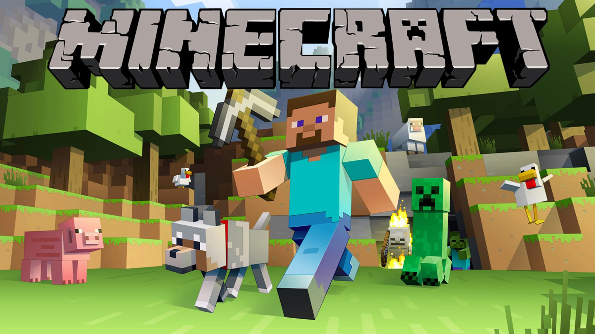
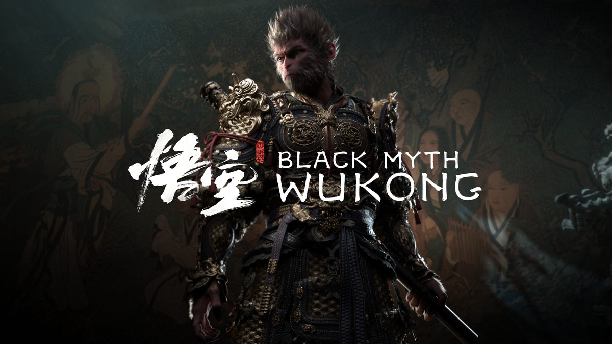
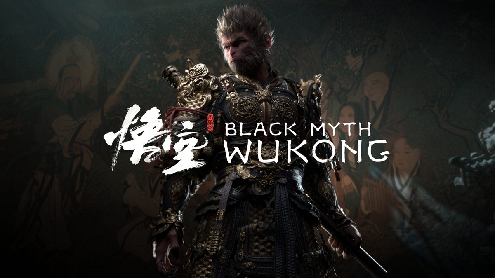
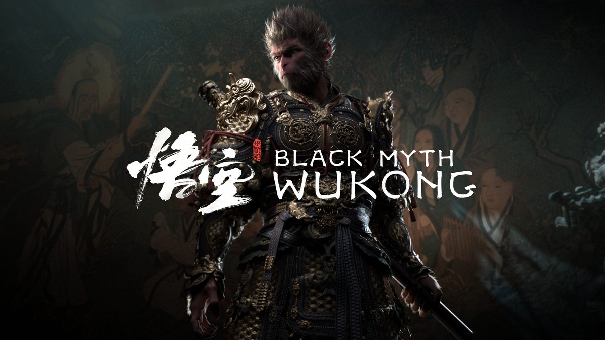

1. Wukong
"Wukong" se refiere a Black Myth: Wukong, un juego de acción y rol (ARPG) basado en la mitología china y la clásica novela "Viaje al Oeste". En este juego, los jugadores asumen el papel del Rey Mono, Sun Wukong, y deben enfrentarse a una serie de desafíos épicos en un mundo abierto lleno de mitos y leyendas. El juego se caracteriza por su combate desafiante, gráficos impresionantes y una narrativa profundamente arraigada en la cultura china. Es un ejemplo del género de acción-aventura con elementos de RPG, similar a juegos como "Dark Souls" o "Sekiro: Shadows Die Twice".
2. Minecraft
"Minecraft" es un juego de tipo sandbox y supervivencia que permite a los jugadores explorar, construir y sobrevivir en un mundo generado de manera procedimental. Este título, desarrollado por Mojang Studios, es conocido por su estilo visual de bloques y su jugabilidad abierta que permite a los jugadores crear prácticamente cualquier cosa que puedan imaginar. "Minecraft" es altamente versátil, ofreciendo modos de juego que van desde la supervivencia hasta la construcción creativa y aventuras personalizadas a través de mods. Es un juego que trasciende géneros, pero se clasifica principalmente como un juego de sandbox con elementos de aventura y construcción.
3. Dead Space
"Dead Space" es un juego de terror de supervivencia (survival horror) en tercera persona, desarrollado por EA Redwood Shores (ahora conocido como Visceral Games). El juego se centra en la historia de Isaac Clarke, un ingeniero que se enfrenta a una infestación alienígena en una nave espacial minera. El juego es conocido por su atmósfera opresiva, su diseño de sonido escalofriante y su mecánica de desmembramiento estratégico, lo que lo convierte en un ícono del género de terror en los videojuegos. "Dead Space" pertenece al género de survival horror con un enfoque en la narrativa y la tensión psicológica.
4. Mortal Kombat 1
"Mortal Kombat 1" es un juego de lucha (fighting game) lanzado en 1992 por Midway Games. Es el primer título de la ahora famosa franquicia "Mortal Kombat". Este juego se destaca por su combate brutal y sus "Fatalities", movimientos finales que permiten a los jugadores terminar las peleas de manera extremadamente violenta. "Mortal Kombat 1" es un clásico dentro del género de juegos de lucha, y fue pionero en la implementación de gráficos digitalizados y la violencia explícita en los videojuegos, lo que lo hizo muy controvertido en su momento. Pertenece al género de lucha y estableció las bases para lo que se convertiría en una de las series de juegos de pelea más icónicas de la historia.
TOP 4 mejores juegos personales:

 


